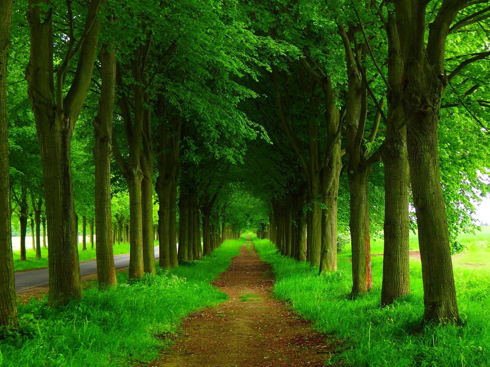

The trees existed from much long ago,
Where we had no idea how did they grow,
When there was no one for the seeds to sow,
How did these trees actually grow.
Researching for a long time we found,
These trees grow from the ground,
And they can be so old around,
100 years but still in sound.
When we found out they can be so useful,
The part which I fear,
And cut them down for our good,
And reducing their life year(s).
This slowly lead to deforestation,
Causing the area to get barren land,
There were many voices of hesitation,
Thinking of not making earth covered by sand.
Great nature lovers made many attempts,
To stop this wrong deed,
Of cutting down trees,
Because they were what we need.
Then time passed,
Many projects were taken up for planting trees,
People got aware about trees importance,
Making it for nature lovers a ease.
So we still have to take an effort to plant trees,
Who knows a time may come,
When there is shortage,
Better have precaution we overcome.
How important are these to us,
They manage whole planet,
But we have a point in plus,
Making it easier to save our mother earth.
~ by Arav Shrivastava
Comment: